毎日の道具
Spendosaurus
最初の見積もりから最後の分割払いまで、家族の大きな出費を計画。
フォローしている企業で何が変わったかを理解し、自分の理由を見直す。

Pocket Omaha Core 0.7.1 Android 8.0 以降用のスタンドアロン GitHub エディションです。これには、ウォッチリスト、調査、レビュー、比較、DCF サンドボックス、ローカル アラート、ウィジェット、JSON バックアップが含まれます。 Cloud AI、Google サインイン、クレジット購入は省略されています。
Play 版と並行して Pocket Omaha Core としてインストールされ、ローカル保存領域は別になります。記録の移行には JSON バックアップと復元を使います。詳しくは インストールガイド で、チェックサムの確認、バックアップ、ソースからのビルド方法を確認してください。
Pocket Omaha は、長期投資家がフォローしている企業で何が変わったかを理解し、それぞれのアイデアの理由を見直すためのアプリです。モバイル優先の Web アプリと、ネイティブの Android アプリがあります。
ウォッチリストから始め、Review で注意が必要な企業を確認し、Research で根拠を調べます。その企業をフォローする理由、成り立ち続けるべき前提、考え直すきっかけになることを書き留め、その理由がまだ有効かを記録します。
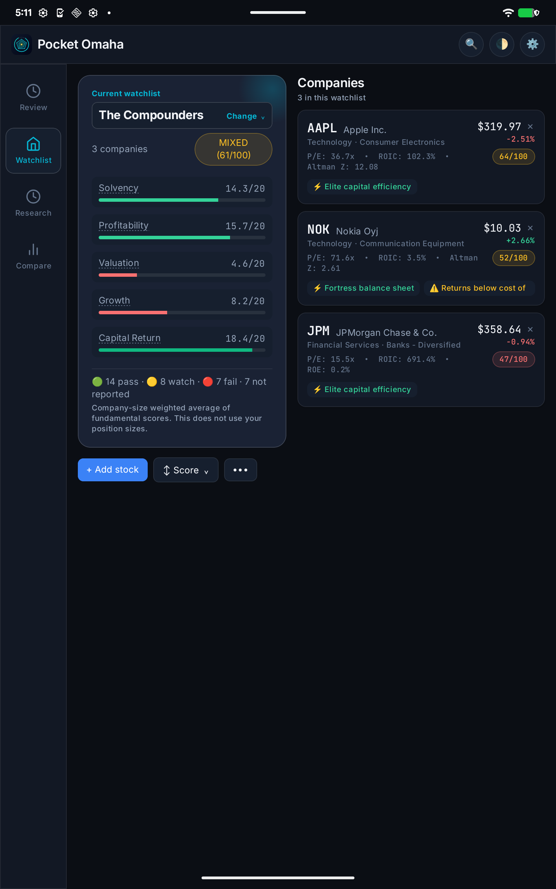
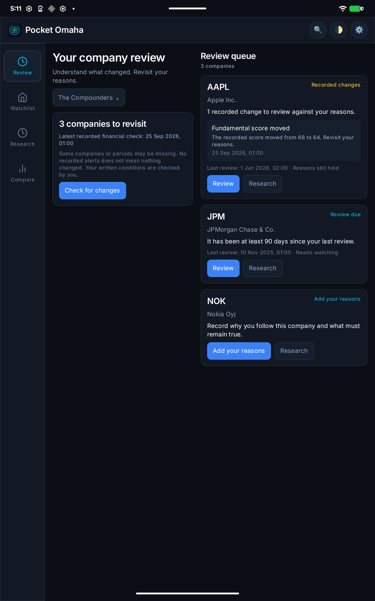
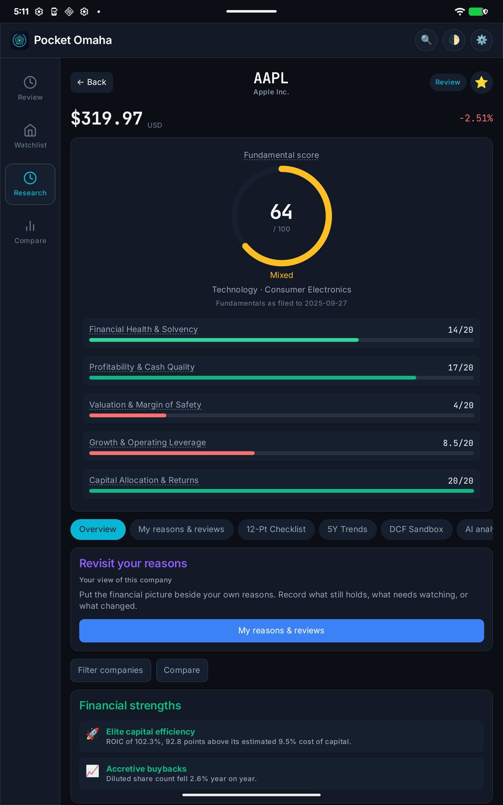
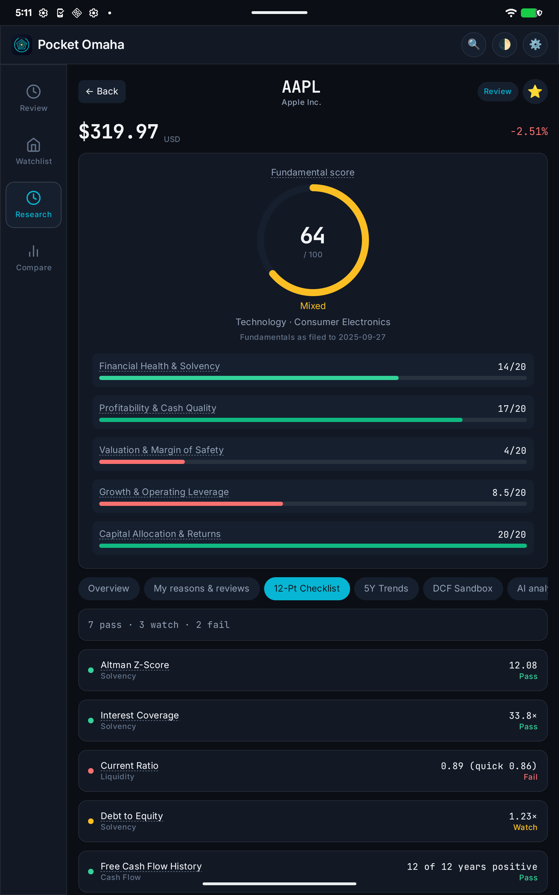
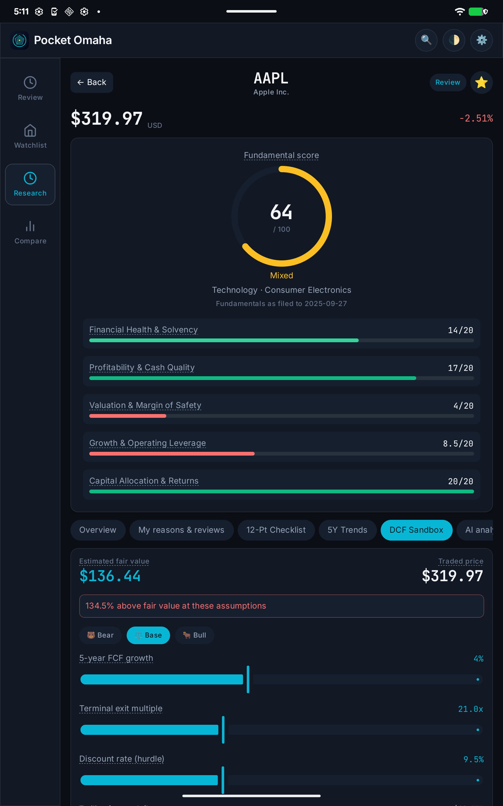
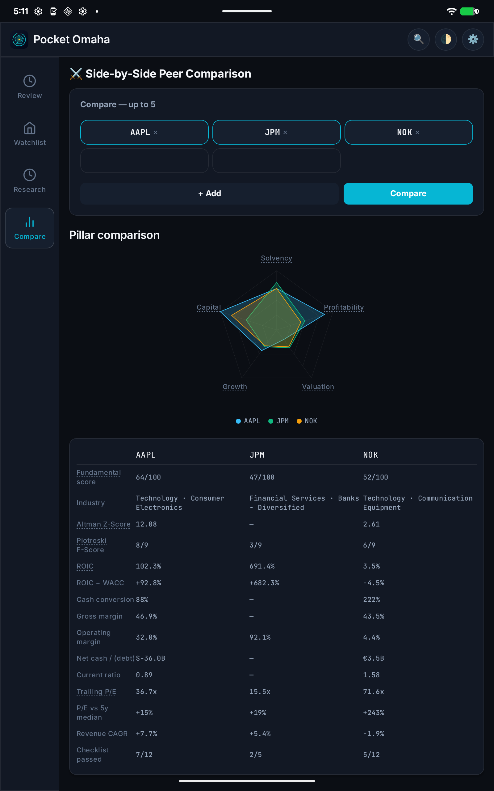
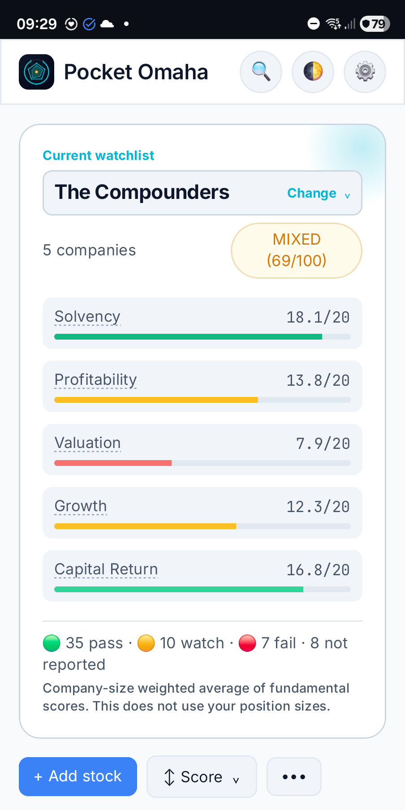
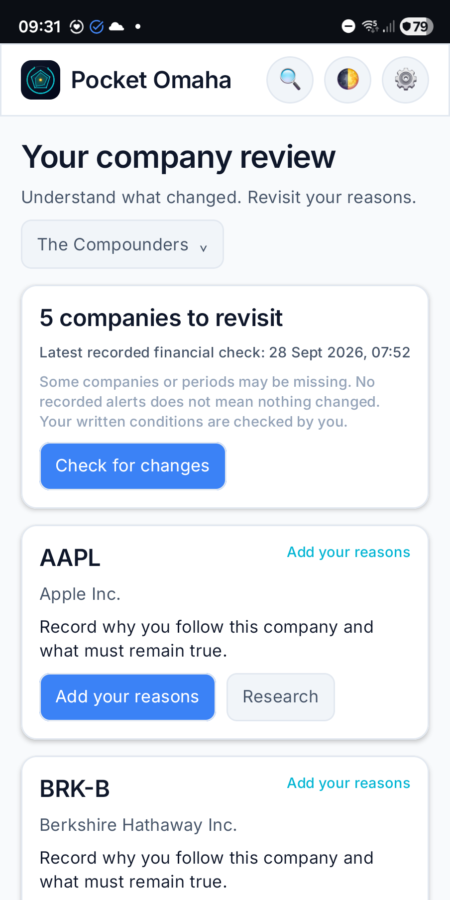
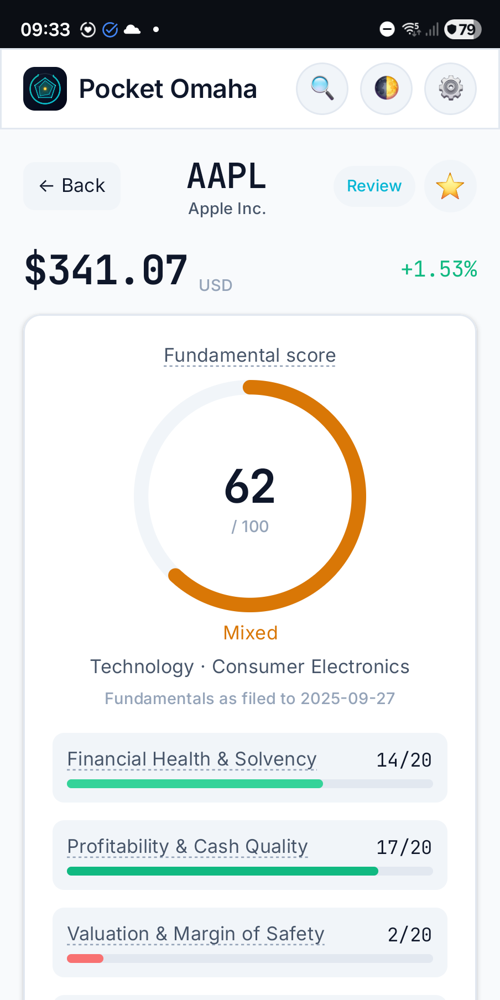
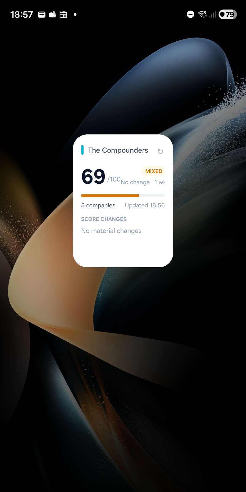
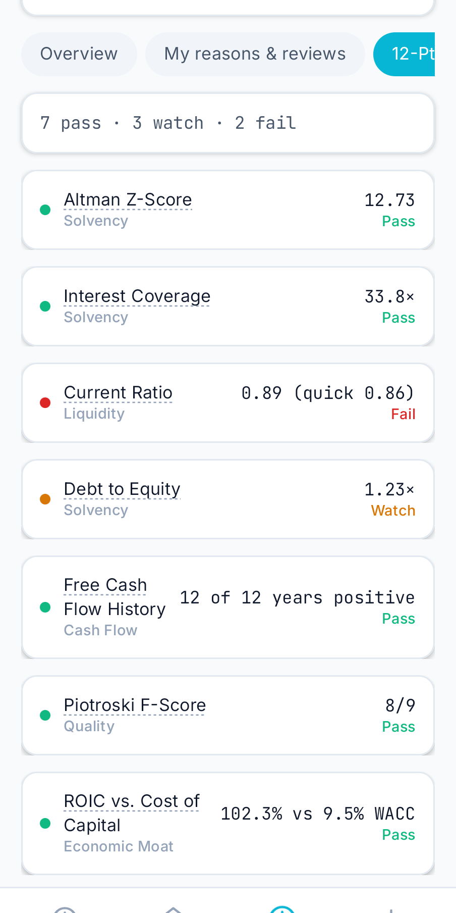
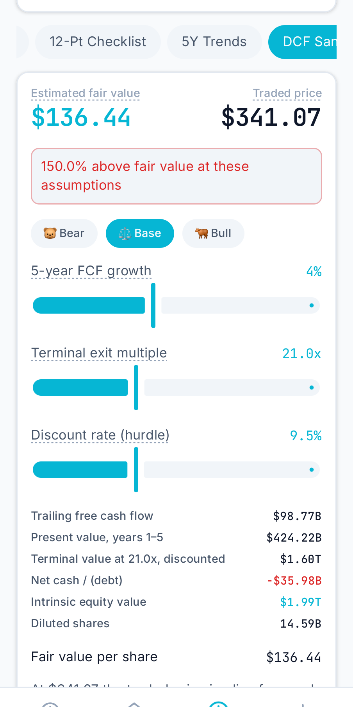
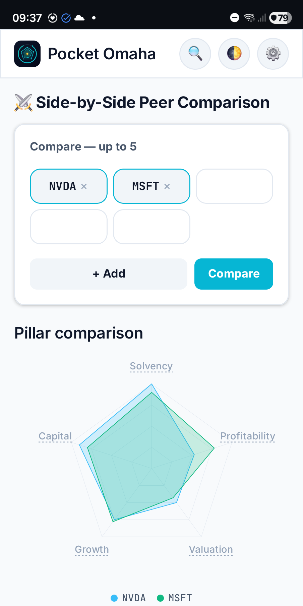
無料の市場データでは、項目が空のことがよくあります。Pocket Omaha はもっともらしい既定値で埋める代わりに、欠けた値を「未報告」と表示し、スコアから除外します。測定カバー率が 60% 未満ならスコア自体を出さず、各スコアカードには元にした会計年度を明記します。
財務諸表は SEC EDGAR から提出されたままの数値を取得し、Yahoo Finance は補完と株価に使います。API キーも継続的な費用も不要です。
両バージョンは同じスコアリングエンジンを共有しているため、同じ企業ならどちらでも同じスコア、チェックリスト、バリュエーションになります。Web アプリは招待制の自己ホスト型サーバーで動き、プッシュ通知に対応します。Android アプリはすべてを端末内に保存し、アカウント不要で、選んだウォッチリスト用のホーム画面ウィジェットも使えます。タブレットではサイドのナビゲーションレールに切り替わり、ウォッチリストとレビューキューが 2 ペイン表示になります。
Android で Google ログインが必要なのは AI 分析を使うときだけです。AI 分析はクレジット制で、5 クレジットが無料、追加分は購入できます。Android アプリはリリース候補版で、Google Play での公開に向けて準備中です。
Pocket Omaha はリサーチとレビューのためのツールです。スコアは過去に報告されたファンダメンタルズを要約したもので、リターンを予測したり、個別の投資助言をしたりするものではありません。